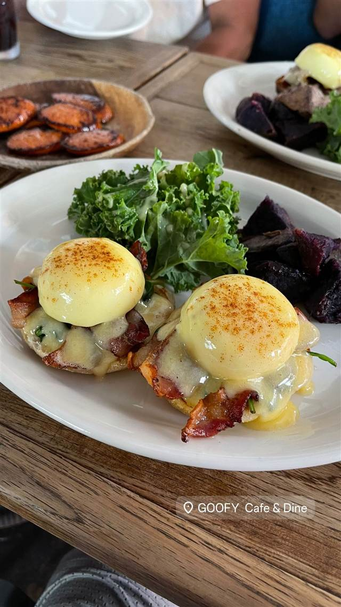
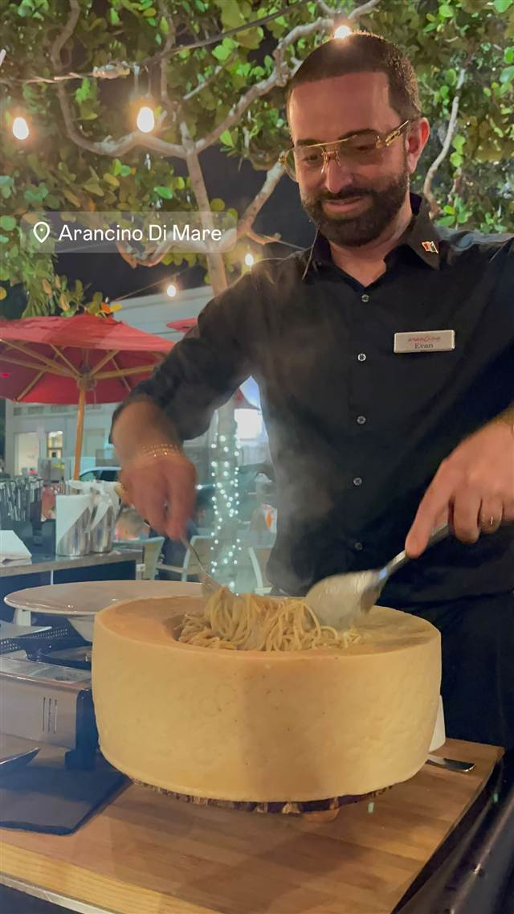

GOOFY Cafe & Dine Waikiki
右足前のサーフスタイル「グーフィーフット」に由来、地元食材のブランチ
GOOFY Cafe & Dine
2013年、日本の飲食企業ゼットンがアラワイ運河沿いに開いたサーファーズカフェ。店名は右足前のサーフスタイル「グーフィーフット」に由来し、地元食材を使った「Eat Local」なブランチが評判で連日行列ができる。
TRIVIA
豆知識
- 店名はディズニーキャラクターではなく、右足を前に構えるサーファー「グーフィーフット」に由来
- 近くのサーフスポット「アラモアナ・ボウルズ」の名物サーファーにちなんで命名された
REVIEWS
世間の評判
3.27食べログ
フレンチトーストやロコモコの人気
- フレンチトーストやロコモコなど定番メニューを評価する声が多い
- 地元ハワイ産食材を使った新鮮でヘルシーな料理を評価する声が多い
- ランチタイムは席数が少なく20〜30分待つこともあるという声がある
食べログ 口コミ58件
| 創業 | 2013年創業（アラワイ運河沿いのVillage店として開業） |
|---|---|
| 系譜 | 「Aloha Table」なども手がける日本の飲食企業ゼットン（Zetton, Inc.）が展開するサーファーズカフェ。 |
| 看板 | エッグベネディクト、アサイーボウル |
| こだわり | 地元食材を生かす「Eat Local」をコンセプトに、ハワイらしいブランチメニューを提供。 |
| どこから | 海外 |
| 行くなら | 行列 |
| 場所 | ワイキキ 米国ハワイ州ホノルル ワイキキ（アラワイ運河沿い） |
| メモ | 連日行列ができる人気ブランチ店。後にディナー営業やワイキキビーチ店も展開。 |
食べたもの：エッグベネディクト / アサイーボウル
NEARBY
近い店・同じ系統の店
-

パスタ ワイキキ Arancino di Mare ハワイ最高のイタリアンに選ばれた、直輸入食材のパスタ 昼 ¥2,000～¥2,999 夜 ¥15,000～¥19,999 -
 メキシコ ワイキキ
Buho Cocina Y Cantina
スペイン語でフクロウを意味する屋上350席のタコスとマルガリータ
夜 ¥5,000～¥5,999
メキシコ ワイキキ
Buho Cocina Y Cantina
スペイン語でフクロウを意味する屋上350席のタコスとマルガリータ
夜 ¥5,000～¥5,999
-
 ハワイ ワイキキ
Maguro Brothers Hawaii（ワイキキ店）
築地で目利きを鍛えた兄弟が営むチャイナタウン発のポキ丼
ハワイ ワイキキ
Maguro Brothers Hawaii（ワイキキ店）
築地で目利きを鍛えた兄弟が営むチャイナタウン発のポキ丼
-
 ブランチ 代官山
IVY PLACE
本来は白い箱形の予定だった、別荘風の一軒家でパンケーキ
昼 ¥4,000～¥4,999 夜 ¥6,000～¥7,999
ブランチ 代官山
IVY PLACE
本来は白い箱形の予定だった、別荘風の一軒家でパンケーキ
昼 ¥4,000～¥4,999 夜 ¥6,000～¥7,999
-
 ブランチ 江ノ電七里ヶ浜駅
bills 七里ヶ浜
NYタイムズが「世界一の朝食」と評したスクランブルエッグ、海外進出1号店
昼 ¥2,000～¥2,999 夜 ¥2,000～¥2,999
ブランチ 江ノ電七里ヶ浜駅
bills 七里ヶ浜
NYタイムズが「世界一の朝食」と評したスクランブルエッグ、海外進出1号店
昼 ¥2,000～¥2,999 夜 ¥2,000～¥2,999
-
 ブランチ 広尾
ボンダイカフェ（BONDI CAFE）広尾本店
シドニーのビーチに憧れて生まれたとろとろエッグベネディクト
昼 ¥1,000～¥1,999 夜 ¥2,000～¥2,999
ブランチ 広尾
ボンダイカフェ（BONDI CAFE）広尾本店
シドニーのビーチに憧れて生まれたとろとろエッグベネディクト
昼 ¥1,000～¥1,999 夜 ¥2,000～¥2,999